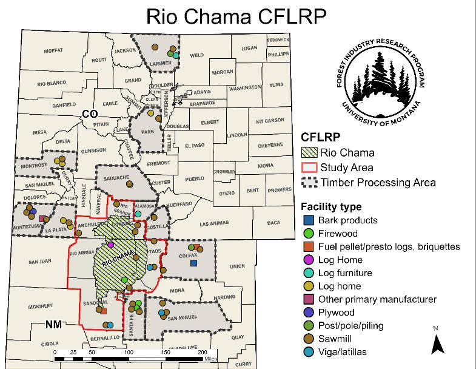

WROMP (Watershed Resilience Online Marketplace) is an evolving community resource designed to connect forest restoration activities, wood utilization businesses, and communities to strengthen watershed resilience, support local economies, and improve utilization of restoration materials through collaborative exchange of information to facilitate local business development and employment opportunities.
Rio Chama CFLRP Capacity Map 2024

View Full 2024 CFLRP Capacity Report
Getting Started
Use the navigation buttons above to explore the Watershed Resilience Online Marketplace.
- Business Registration
Register or update your organization. - Transaction Request
Submit a request to buy, sell, provide, transport, or process forest restoration materials. - Business Directory
Browse participating businesses and organizations. - Stored Requests
Review marketplace requests submitted by users. - Match Engine
Identify potential opportunities between suppliers and users.